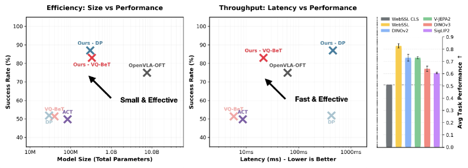
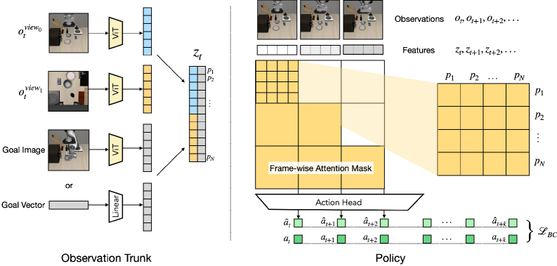

Dense ViT FeaturesDINOv2 / WebSSLBlock-Causal AttentionFrozen BackboneEfficient Policy
제출: 2026년 7월 20일 · 동결 ViT(DINOv2·WebSSL 등) + 정책 트랜스포머만 학습 · 51.55M 파라미터 · 1×L40S 6.5 GPU-hour
한 줄 요약 (TL;DR)
비전 모델은 이미지를 바둑판처럼 조각(patch)으로 잘라 조각마다 특징 벡터를 만든다. 그런데 로봇 정책들은 보통 이 수백 개 조각을 평균 내어 하나로 뭉갠 뒤 쓴다 — 그러면 "무엇이 있다"는 남지만 "어디에 있다"가 사라진다. 케이블을 구멍에 꽂는 일에는 치명적이다. 이 논문은 조각들을 뭉개지 않고 그대로 정책에 넣는다. 대신 조각 수가 많아 생기는 문제를, 같은 시점 안에서는 조각끼리 자유롭게 참조하되 과거 시점만 볼 수 있게 막는 방식으로 푼다. 비전 모델은 학습시키지 않고 얼려둔 채 작은 정책만 학습하는데도, 뭉개서 쓰는 방식보다 +40%, 거대 모델을 통째로 미세조정한 OpenVLA-OFT보다 +18% 높다. 그것도 파라미터는 0.7%(5,155만 vs 76억), 속도는 5.6배(10.99ms vs 61.71ms). 실제 로봇에서 케이블 삽입 70%(OpenVLA-OFT 30%), 공구 걸기 90%(65%).
1배경 · 문제의식
ViT(Vision Transformer)는 이미지를 격자 조각으로 잘라 조각마다 특징 벡터를 뽑는다. 예를 들어 16×16 = 256개 조각, 각 조각당 384개 숫자. 이 조각별 특징에는 "어디에 무엇이 있는지"가 고스란히 들어 있고, 인터넷 규모 학습으로 이미 매우 좋아졌다. 그런데 로봇 학습은 이걸 제대로 안 쓴다. 기존 정책은 둘 중 하나다.
하나로 뭉개기 — 256개 조각을 평균 내거나 요약 토큰(CLS) 하나만 뽑아 쓴다. 계산은 싸지만 위치 정보가 날아간다.
거대 모델 통째로 미세조정 — 수십억 파라미터짜리 영상·언어 모델 전체를 로봇 데이터로 다시 학습. 성능은 나오지만 학습·추론 비용이 막대하다.
논문의 질문: "대규모 비전 학습의 이득만 가져오고, 수십억 파라미터의 비용은 두고 올 수 없을까?" 답은 의외로 단순하다 — 이미 좋은 조각별 특징을 뭉개지 말고 그대로 쓰되, 비전 모델 자체는 건드리지 말자.
2핵심 Contribution
Dense patch 토큰의 직접 활용 — 동결 ViT의 patch feature(예: 16×16×384)를 풀링 없이 정책에 공급, 조작에 필수적인 세밀한 공간 밀도를 보존.
Block-causal attention mask — 프레임 내부는 완전 양방향으로 patch들이 서로 참조, 프레임 간에는 causal 마스킹으로 시간 인과성 유지. 표준 정책의 시간 구조를 깨지 않으면서 관찰당 다수 patch 토큰에 attend.
이미지 관찰 ot ∈ ℝC×H×W를 동결 ViT로 인코딩해 P×D 형태의 patch feature를 얻는다(P=patch 수, D=임베딩 차원). 길이 T의 컨텍스트 윈도우면 T×P×D 시퀀스가 된다. 목표 조건화는 이미지 기반(concat → T×P×2D)이나 벡터 기반(concat → T×P×(D+G)) 모두 지원. 멀티뷰(otview0, otview1)와 goal image/vector가 각각 ViT/Linear로 인코딩돼 하나의 토큰열 zt로 합쳐진다.
Block-Causal Attention (이 논문의 핵심 장치)
조각을 뭉개지 않으면 토큰이 시점 수 × 조각 수만큼 쏟아진다. 이걸 그냥 다 섞으면 문제가 생긴다 — 트랜스포머는 기본적으로 모든 토큰이 서로를 참조하는데, 그러면 과거 시점이 미래 시점을 훔쳐보게 된다. 실제 로봇은 미래를 모르는 채 행동해야 하므로 이건 반칙이다.
해법은 "어떤 토큰이 어떤 토큰을 볼 수 있는지"를 규칙으로 제한하는 것(이 규칙표를 attention mask라 한다):
같은 시점 안에서는 서로 자유롭게 — 한 장면의 조각들은 앞뒤 구분 없이 전부 참조 가능. 조각들이 힘을 합쳐 "손이 어디, 구멍이 어디"라는 공간 관계를 구성한다.
시점 사이에서는 과거만 — 현재 시점의 조각은 자기 시점과 지나간 시점만 볼 수 있고 다음 시점은 차단된다.
직관: 조각을 하나로 뭉개면 "어디에"가 사라지고, 전부 자유롭게 섞으면 미래를 훔쳐본다. block-causal은 그 사이의 절충이다 — 한 장면 안에서는 눈을 크게 뜨고 보되, 시간을 거슬러 앞을 내다보지는 못하게 한다. 시점 단위의 덩어리(block)에만 인과 제약을 건다는 뜻에서 "block-causal".
모델 크기(Table 13): VQ-BeT·Diffusion Policy 모두 용량에 따라 일관 향상. Push-T coverage 0.50(4층)→0.57(6층)→0.69(8층).
인코더 선택(Figure 5):WebSSL·DINOv2가 최강, SigLIP 2는 약함 — 언어-이미지 정렬을 우선해 조작에 필요한 기하 특징이 부족하다는 가설.
6핵심 Figure / Table

Figure 1 — 효율성 티저. (좌) 모델 크기 vs 성공률: Patch Policy가 OpenVLA-OFT보다 훨씬 작으면서 더 높음(Small & Effective). (중) 지연 vs 성공률: 더 빠르면서 더 높음(Fast & Effective). (우) 동결 인코더별 평균 태스크 성능 — WebSSL·DINOv2 최상, SigLIP 2 최하. (출처: arXiv:2607.18236)

Figure 2 — Patch Policy 구조. (좌) Observation Trunk: 멀티뷰 관찰과 goal image/vector를 동결 ViT/Linear로 인코딩해 patch 토큰열 zt 구성. (우) Policy: T×P patch 토큰에 frame-wise(block-causal) attention mask를 적용, action head가 행동 복제 손실 ℒBC로 액션 예측. (출처: arXiv:2607.18236)